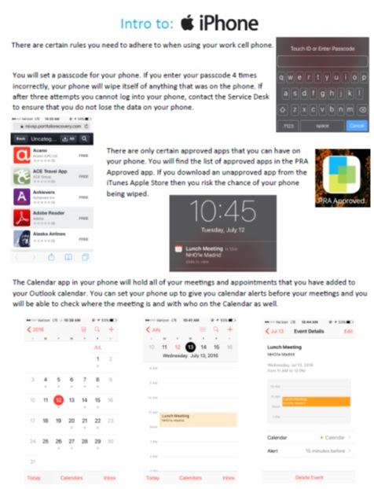

As I continue to evolve through my experiences and college education, I have learned invaluable skills that can be applied to the corporate work force. I’ve developed and expanded my skills for time management and organization by leading projects in my college career and the beginning of my professional career. I’ve proven myself as someone that can take an idea or instruction, and run with it, without needing constant guidance and babysitting. During my internship with PRA Group, I was shown the companies onboarding process and I then worked with others to come up with some ideas to implement solutions and improve upon practices the company already had, resulting in a smoother system for new hires. Moving through my college education and towards a permanent position in corporate America, I welcome any new experiences that will allow me to grow as both a person and a professional, as I view learning new things as one of the most important things I can do to better myself.
I live on the Peninsula in Southern Virginia, in the city of Newport News. This area of Virginia is known for its vast history, having battlefields from the Revolutionary War and Civil War, as well as a shipbuilding yard that had a hand in building World War II ships. I grew up in Virginia, the daughter of Air Force Senior Airman turned Air Force contractor. I've always been surrounded by computers and this has drawn me towards a career in the Information Technology field as an adult. I am currently working towards a Bachelor of Science in Networking and Systems Administration at Rochester Institute of Technology.
I am currently seeking a 2017 summer/fall internship or co-op opporutnity in the computer networking field.
Rochester Institute of Technology | Rochester, New York
PRA Group | Norfolk, Virginia
Captain George's Seafood | Williamsburg, Virginia
SeaWorld Parks & Entertainment | Williamsburg, Virginia
Cisco IOS
SQL
Java/Object-Oriented Programming
HTML/CSS
Photoshop
Microsoft Office Suite

"INTRO TO"
Theme by BLACKTIE.CO